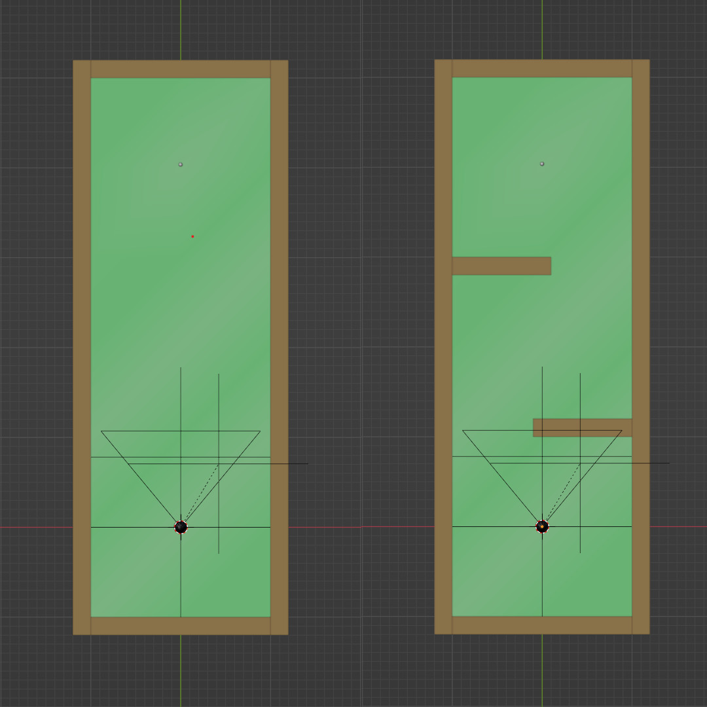
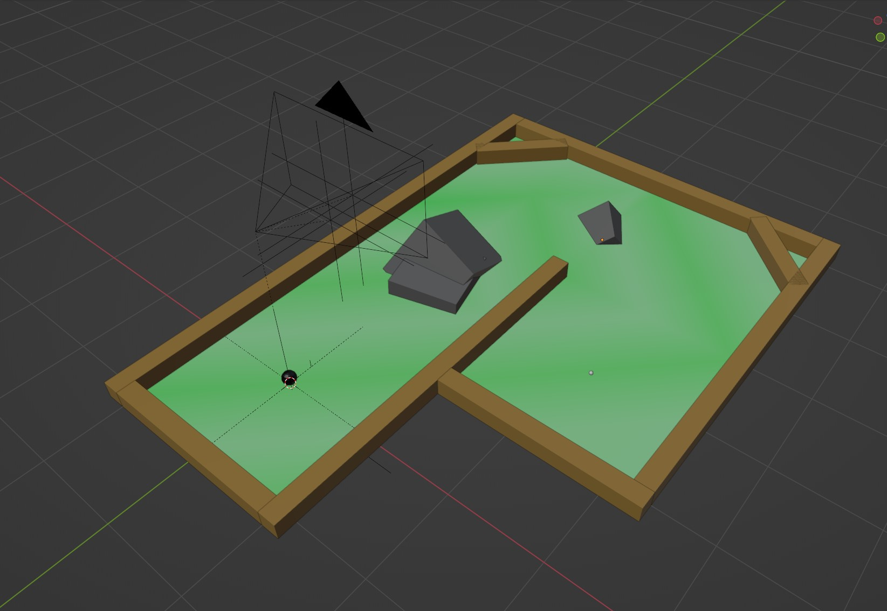
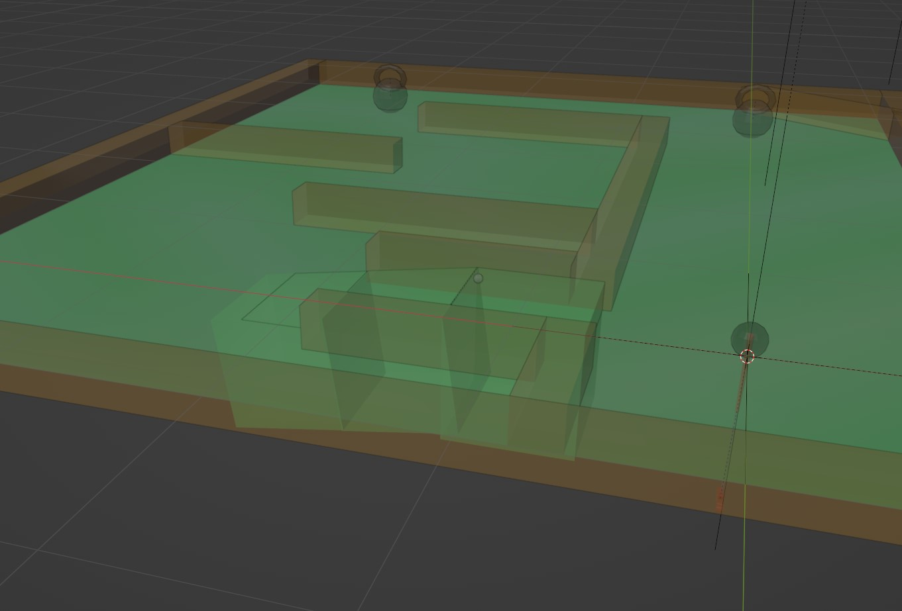

Andrew Knowles
Gameplay Systems Engineer
Gameplay Systems Engineer
Reversed mini-golf in which you hit the hole to the ball.
Built in 3 days using C++ and OpenGL, with custom models and a basic physics engine,
for CMU's 15-466: Computer Game Programming course.
I had less than a week to complete my first 3D game for Computer Game Programming. As this was my first 3D project I've worked on with C++ and a graphics API like OpenGL, I decided to be reasonable and wrote a physics engine overnight.
Of course, my implementation was pretty limited, focusing only on sphere and box collisions, hardcoded floor planes extending infinitely, flawed dampening that allowed objects to disappear sometimes on one level, and so on. Still, I think I did a decent job on the tech and levels.
The theme of the first 3D assignment in Computer Game Programming was manipulating a transform hierarchy. With base code provided for the rendering side, this was not very challenging at all for anyone with game development experience and most people's games could be very simple as a result.
I was having trouble coming up with ideas because the task was so open-ended, and a friend suggested I do something with golf. I heard mini golf and really liked the idea- with the core mechanics done it would be easy to iterate and create a couple levels. It was perfect for the scope of the assignment.
Wanting to be original, I thought about how to give the game a twist. That summer, I had participated in GMTK Jam 23, the theme for which was "Role Reversal." This came to mind when planning, and I thought it might be funny to hit the (black) hole into the ball instead of the other way around. It also opened up the potential for gravity-based plays which was interesting.
I started with making a character controller, adjusting to using transform matrices for everything instead of just calling "GetGlobalPosition()" like in a game engine. Once I could move horizontally and look around like normal, I added a club model and made it interpolate between a neutral and aiming stance based on mouse look, and made it swing when clicked.
Then, it was time for the fun part.

I had some experience implementing particle physics in my graphics course the previous semester, so I had a rough idea of how to start- give the balls a force and velocity vector, give them constant downward force due to gravity, and reflect motion when they hit a wall.
The actual collision detection wasn't super easy for me, though. I found a decent tutorial by Winterdev which outlined the basics of giving objects collisions, checking for overlaps, and calling solvers each frame. I could also take a couple shortcuts as I knew my scene only had two dynamic objects (the ball and black hole).
For solving collisions, I only had to worry about sphere-box interactions: sphere-sphere overlap meant the black hole was picking up the ball (or a weight) in which case I just perform a scripted action. With sphere-box interactions, I could think back to particle systems for help.
You can read the source code, but basically I'm just moving the ball back to where it would be right when it starts intersecting the box, then reflecting its velocity and moving it for as much time as passed after the collision began. It worked well for wall bounces, although the ball could clip through the floor on level 4 for some reason, possibly related to the discrete nature of collision detection.
Once that was done, I just needed to create these game objects using meshes in my scene on load, which I did by checking for specifically-named meshes (such as "Ball" or "Wall"). Our professor provided a Blender export script which would allow these names to be easily read at runtime.
Considering the tight deadline and the amount of focus needed on making the physics work, I could only make a handful of levels for this assignment, so I tried to design them in a way that showcased a few different mechanics in order to let the player imagine possible extensions for the future.
My physics system and player controller also came with some limitations I had to work around, like only using boxes for level geometry, and keeping things mostly flat as I could only move horizontally. This made it tough to try more interesting designs like sloped surfaces, although I worked out a decent solution for level 4.
The first two levels act as a tutorial, letting the player get used to the aiming mechanic gradually. I think I was thinking of the beginning of Super Monkey Ball when I made level 1.
Level 3 is where I started to add some more interesting geometry, making these little rocks out of some gray cubes. Thankfully, the physics worked pretty well on these sloped faces, so hitting the ball with some force could make it roll up a bit or even launch over the side of the level (inspiring my addition of the "reset" button). I think this level looks pretty good for the really simple art style- the gray rocks add some nice variety.
After these levels, I was trying to think of more interesting gravity-related mechanics to work with, as the small gravitational field around the black hole didn't make the game that different from regular mini golf so far.
For level 4, I decided to add some weights around that the black hole could eat, granting it a stronger gravitational pull. This also opens up some interesting gameplay options for the player- they could work their way through the level as usual to reach the ball, or let the gravity pull the ball down from its raised position if they collect weight and return to the start.

To make the slope, I just hid some cubes inside the ground, being careful to line up the surfaces to prevent bumping into edges.
I think this last level especially does a good job showing gameplay potential to the player, which is all I needed for such a small assignment.
If it wasn't clear from the physics implementation discussion, this game has a lot of flaws. I could see myself remaking it with better visuals and content in a game engine, or potentially revisiting and rewriting the physics system to be more robust at some point.
Still, I think this game was perfect for the assignment. A handful of levels, 3-5 minute experience, easy to understand- so easy, in fact, that I was able to teach my dad to play over the phone when I sent him a copy. That was one of my favorite moments in my game dev career.
Feel free to check out the game on github here, for source code and a build.